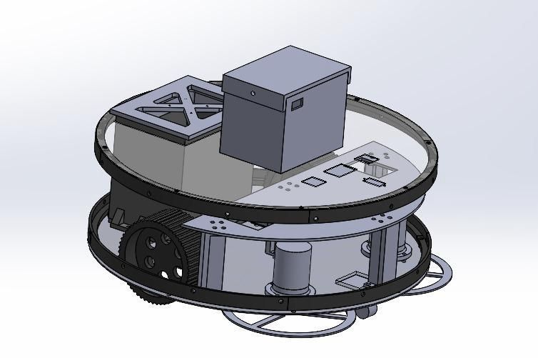
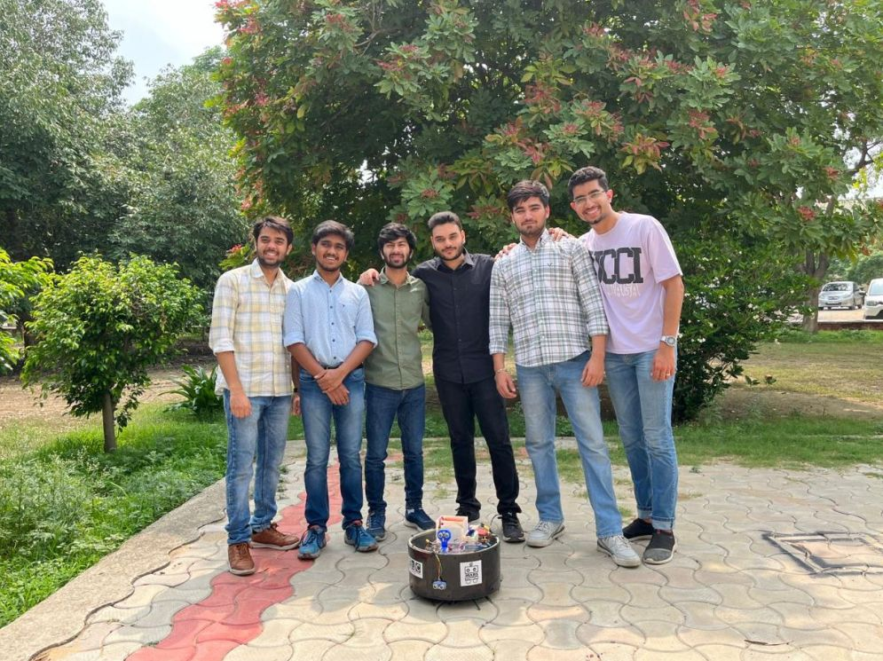
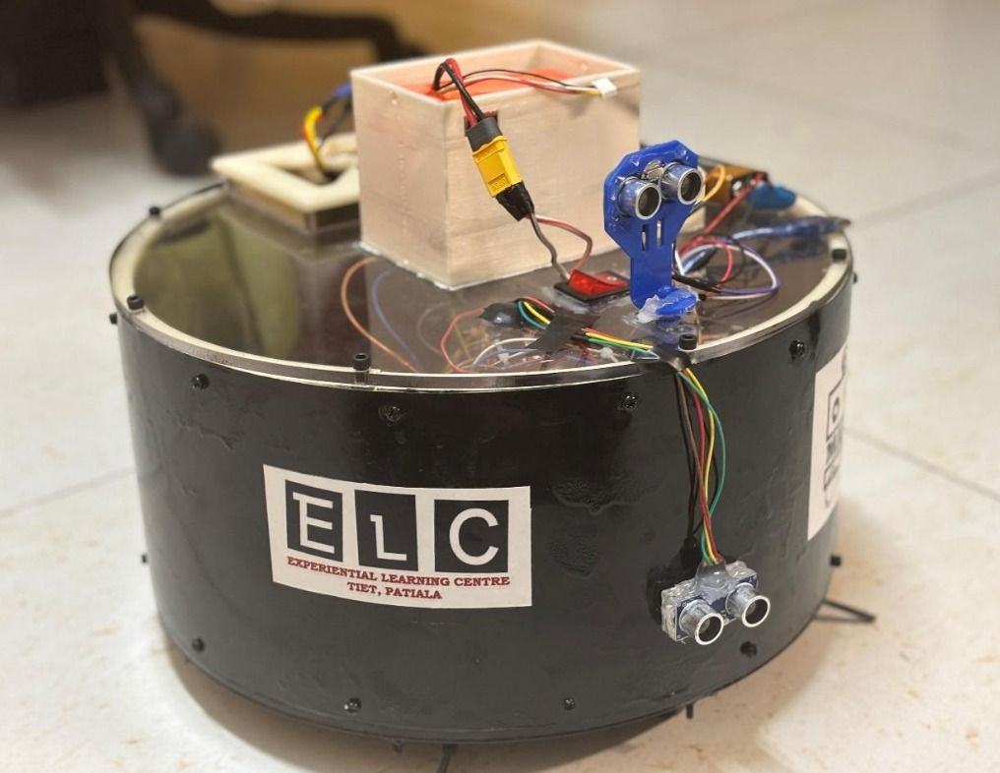
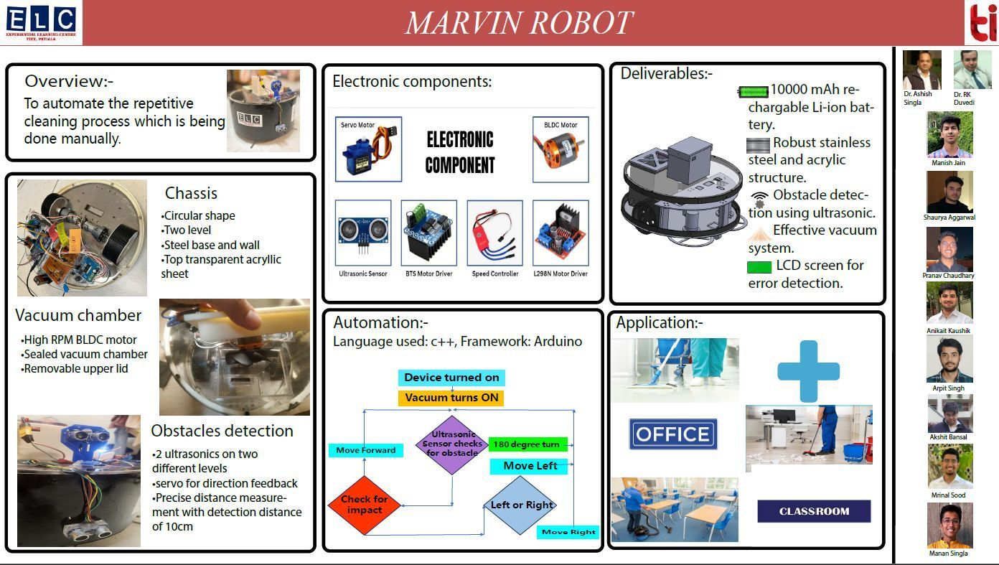
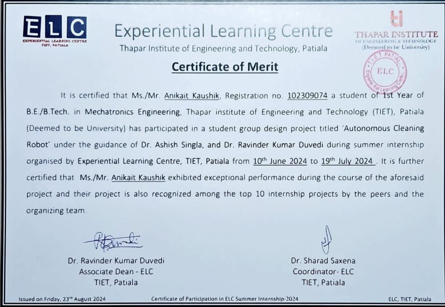

A two-level chassis
Steel base and wall with an acrylic top, designed in SolidWorks.

An autonomous cleaning robot that carries its own vacuum, senses obstacles with ultrasonics and finds its way around them. Built from scratch in one summer.

Steel base and wall with an acrylic top, designed in SolidWorks.

Two ultrasonic sensors and a servo let it steer around obstacles.

A high-RPM BLDC vacuum in a sealed chamber, controlled by Arduino.
ELC Summer Internship 2024, TIET. In 2025–26 I led MARVIN Gen 2 at MARS.

Chassis, component mounting and the vacuum mechanism, plus the obstacle-avoidance hardware and Arduino control. Built with SolidWorks, 3D printing and sheet metal. Mentors: Prof. Ashish Singla and Prof. R.K. Duvedi.